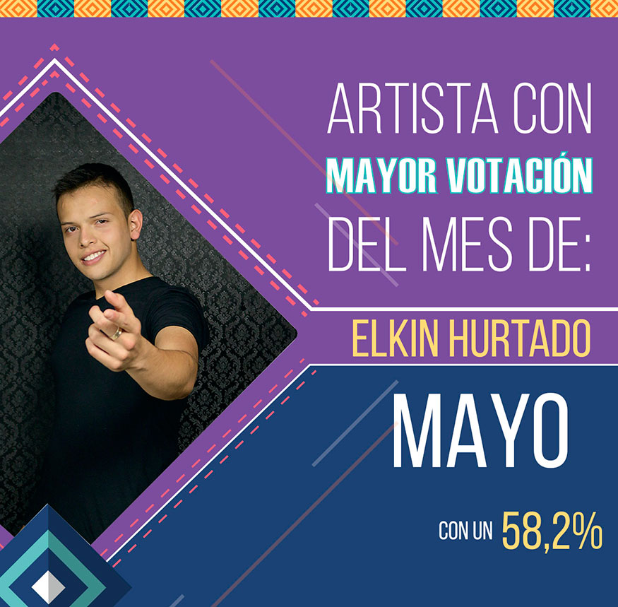

Directorio de Artistas

Alexis Escobar
{kind=link}
Amanda Patricia
 |
Amanda Patricia, “La voz de la música popular” estrena su más reciente sencillo –La que se va soy yo-, que tiene gran proyección para ser uno de los éxitos del 2018. El video fue grabado en la ciudad de Medellín. Contacto:Teléfono: Colombia 315 3868924 – Ecuador +593 984 10867 Instagram: @AmandaPatriciaMusicaPopular Facebook: Amanda Patricia GQ YouTube: Amanda Patricia La Voz de la Música Popular
|
Astra
{kind=link}
Ballestyc
 |
“Hasta el corazón”, es la nueva canción de Ballestyc, quien promete lograr una producción de gran factura musical y audiovisual. Siendo este el resultado de años de experiencia que el artista colombiano aportó a la hora de la interpretación de este sencillo, el cual promete ser un éxito de carácter internacional. |
Betto Rosales
{kind=link}
Camila Lomán
{kind=link}
D-Lord
 |
El cantante colombiano DLORD presenta su tercer y nuevo sencillo –Fiesta-, un ritmo envolvente que te invita a disfrutar y elevar tus niveles de adrenalina. La canción fue escrita por DLORD en compañía de Alexander DJ, quien se ha convertido en productor de las canciones – Infiel-, –Diamante– y ahora –Fiesta-. |
Daniel Medicis
 |
Daniel Medicis, cantante y compositor, nacido en Ipiales, Nariño, tiene una larga trayectoria en música mexicana. A sus 24 años de edad lanza su primer sencillo titulado –Veneno-, con el corazón golpeado con un nuevo formato y ritmo presentando una nueva faceta para la música popular éxito que dejará mucha expectativa en las mejores emisoras de radio y canales nacionales de Colombia. |
Danny Moreno
 |
Danny Moreno & La 13, viene robándose los corazones de sus seguidores con su nuevo éxito musical titulado –Ladrón malvado– con el cual ha contagiado a todo el mundo de una nueva y única forma de hacer música. Con su original timbre de voz canta esta bella historia de amor de su propia autoría bajo la dirección y producción de su hermano y acordeonero Jorge Moreno. Contacto:Teléfono: 311 2464351 – 321 2704325 Instagram: @DannyMorenoYLa13 Facebook: Danny Moreno YouTube: Danny Moreno & La 13 |
Dennis Fernando
 |
Dennis Fernando, cantante, compositor y productor musical colombiano de pop y música urbana, presenta su más reciente sencillo –Estar contigo-, canción que fue escogida por Gustavo Bolívar para ser parte de la serie Sin senos si hay paraíso. El video clip fue protagonizado por la actriz y bailarina Elianis Garrido. |
Eddy Machado
{kind=link}
Eddy Soler
{kind=link}
El Cóndor del Oriente
{kind=link}
Yiyo Bohórquez
 |
Oriundo de Santa Sofía – Boyacá. Cantante, compositor e intérprete del acordeón; desde muy niño su inclinación por el vallenato ha llegado a miles de seguidores con canciones como “Entrégame tu amor”, ahora presenta su nuevo éxito “El amor de mi vida”. |
Elkin Hurtado
{kind=link}
Espinoza Paz
{kind=link}
Fredy García
{kind=link}
Fernando Gil
{kind=link}
Fernel Guerra
 |
Fernel Guerra, artista revelación de la música vallenata, después de su éxito “Propuesta indecente”, nos presenta su más reciente éxito “Muero sin ti”, de su propia inspiración, con la que ganó varios reconocimientos en la hermana República de Venezuela. |
Génesis Internacional
 |
El grupo Génesis Internacional, presenta su más reciente sencillo “Estás mintiendo”, una orquesta de música tropical bailable, que prenderá todas las fiestas de los colombianos. |
Grupo Caliche
{kind=link}
J. Montana
{kind=link}
Jery Sandoval
{kind=link}
Jhoan Ospina
 |
Jhoan Ospina, artista revelación de la música popular nacido en Pacho, nos presenta su más reciente éxito “Maldito corazón”, con un nuevo formato y ritmo presentando una nueva faceta para el género y su carrera. |
Juan Carlos Ensamble
 |
Juan Carlos Ensamble, el artista chocoano puso a bailar a toda Colombia con su nuevo sencillo –Tú y yo-, tema que hace parte de su nueva producción discográfica de este artista que sigue consolidando su carrera como solista. Contacto: |
Juan Palau
 |
“Bendito pecado”, es el nuevo sencillo de Juan Palau, una canción trabajada de la mano de su productor Andrés Múnera y el compositor J Manny. “Bendito pecado”, nos atrapa desde el primer segundo gracias a sus guitarras, y letra contundente. Contacto: |
Juancho Rivera
{kind=link}
Julián López
 |
“Pa´ qué la empujo, si solita cae”. Julián López, una estrella que brilló en el 2017 con su éxito “Borracho”, y recibe el 2018 con “Me quedo con las dos”, reafirmando que será la nueva promesa del género popular. Contacto: |
KandyMaku
{kind=link}
Lady Noriega
{kind=link}
Las Ingratas
{kind=link}
Los K Ramones
{kind=link}
Mateo De Dios
 |
Con menos de 1 año de carrera artística, Mateo De Dios, artista revelación de la música popular, presenta su más reciente sencillo “Doble cara“ , que es una fusión colombomexicana y trata de la traición de una mujer que tiene una doble vida y que es descubierta por su pareja, esta canción forma parte de su primera producción discografía que es titulada “Pa qué más”. Contacto: |
Mauricio Ceballos
 |
Mauricio Ceballos, “Puro sentimiento”, inicia este 2018 pisando fuerte con su cuarto sencillo "Estoy mamao", una canción de su autoría y acompañada de su interpretación que les llega a todos. Contacto: |
Marcos “El bohemio”
{kind=link}
Mau G
{kind=link}
Ómar Pérez
{kind=link}
Orlando López
 |
“Sufre corazón”, es el nuevo sencillo de
Orlando López, con el que logró salirse de lo común y mostró en su video una historia diferente. “Sufre corazón”, se está consolidando como un éxito nacional y está punteando los rankings de los medios de comunicación como uno de los mejores del 2018. |
Óscar Javier Rosero
{kind=link}
Roberto Antonio
 |
Roberto Antonio, cantante y compositor venezolano, co-fundador y precursor del tecnomerengue, está de regreso al mercado discográfico para celebrar tres décadas de impecable trayectoria musical. Desde sus enormes hits de los 80′, incluyendo “Noches de fantasía” y “Marejada” ha hecho girar el globo entero con sus éxitos, hasta su actual sencillo “Me enamoré”, producido por el ganador de Grammy Latino Rodolfo Castillo. Contacto: |
Shantana
{kind=link}
Stokoff
 |
Stokoff “El rey del country pop en español” después de lograr los primeros lugares en los listados radiales de Colombia y la Costa Este de los Estados Unidos con el lanzamiento de su nueva canción “Si tu no estás”, presenta su video clip, una producción única pues es la primera vez que un artista graba una pieza musical con Iphone X. Contacto: |
Víctor Rodríguez
 |
Víctor Rodríguez, cantante de música popular nacido en Bogotá, da a conocer su tema musical de lanzamiento –No se vaya a casar– con un estilo propio y juvenil enfocado para el público en general, dando así un nuevo concepto en este género con su producción “Lo que no sirve que no estorbe”. Contacto: |
Wilmer Saldarriaga
 |
Wilmer Saldarriaga, presenta el video oficial del sencillo “Que la perdone”. El artista vallenato cuenta con 70 canciones inéditas y una agrupación con 12 integrantes. Contacto: |